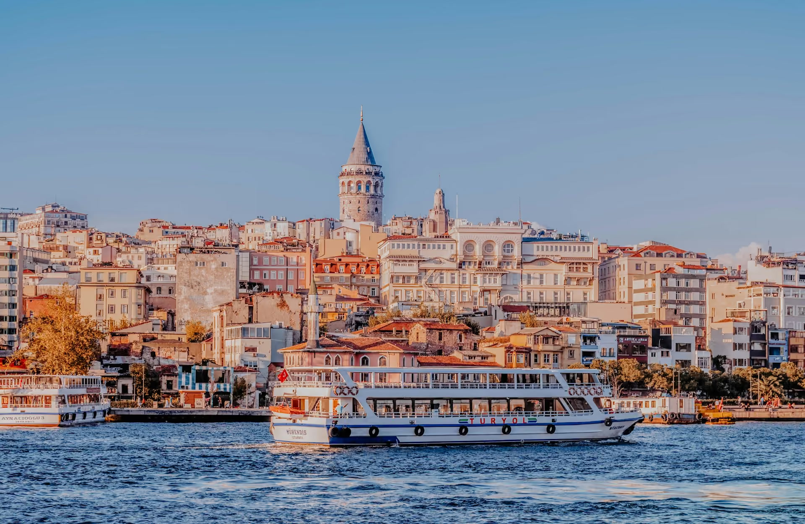
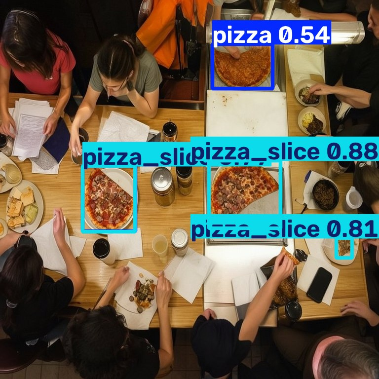
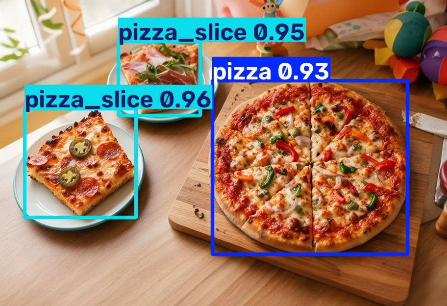
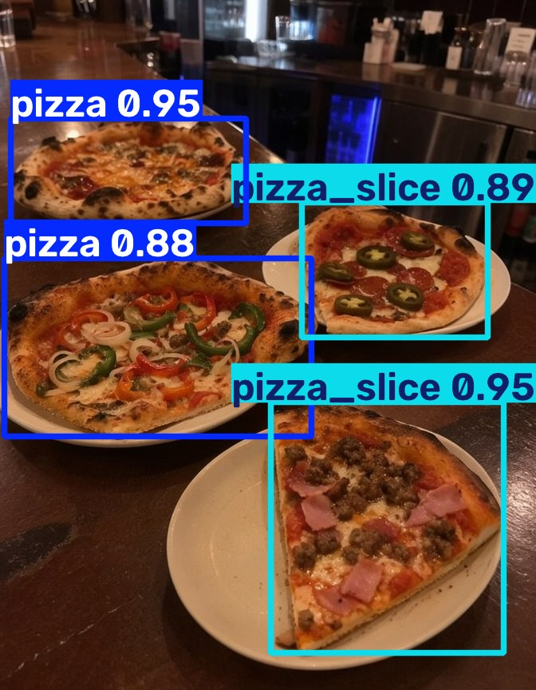
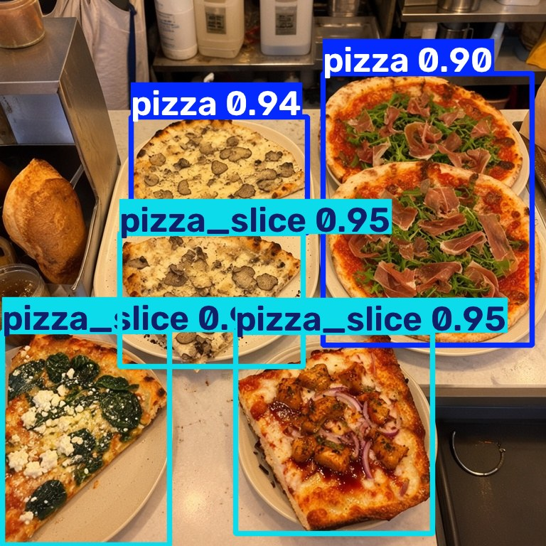

🍕
⚡
model.predict()
Real-Time Edge Vision with Ultralytics 🍕⚡
Onuralp SEZER
Senior ML Engineer @ Ultralytics
Python Pizza Istanbul 🍕 14 November 2026
whoami 👋
Hi, I’m Onuralp!
Senior ML & Computer Vision Engineer at Ultralytics
🐍 I maintain the ultralytics Python package
🦀 and ultralytics/inference (Rust) and TrackForge
🔍 Co-maintainer of SAHI
🐧 Fedora KDE SIG and Mindshare member
All my links 🔗
@onuralpszr
pip install ultralytics 📦
One package for everything. 🐍
from ultralytics import YOLO model = YOLO("yolo26n.pt")results = model.predict("pizza.jpg") # that's it, boxes on your pizza 🍕
Same API for every task
📦 Detection🎭 Instance Segmentation
🗺️ Semantic Segmentation📏 Depth Estimation
🏷️ Classification🕺 Pose Estimation📐 OBB
Today we use YOLO26n, the smallest one. It is made for small devices. 📱
today’s model 🍕
I had zero pizza photos. 😅
🎨
Generate
2,376 pizza scenes made with ComfyUI
🏷️
Auto-label
a detector draws the first boxes for me
🛠️
Fix
clean up mistakes on Ultralytics Platform
🏋️
Train
YOLO26n, pizza and pizza_slice, about 20 min




before ➜ after 🔍
What does predict() see?
Real boxes from my pizza model, on images it never trained on. Drag the slider! 👆
🍕 0 pizza🔺 0 slices⏱️ 0 ms
→ reveal / next image B before A after
 beforeafter ✨
beforeafter ✨
fun fact 🧪
I trained 6 different setups.
They all scored 0.856 to 0.863 mAP.
Longer training, a bigger model, AdamW, more augmentation. Almost no change! Better data helps way more than fancy settings. 🍕
the problem 🐢
A .pt file is great for training.
Not so great on a tiny device.
🐘
Heavy runtime
Full PyTorch plus Python. A big install for a small box.
🧮
32-bit math
Most chips are much faster with 16-bit or 8-bit numbers.
🔧
Generic kernels
Nothing is tuned for your exact chip yet.
model.pt
→
model.export()
→
TensorRT ⚡
NVIDIA GPU, Jetson
CoreML / TFLite 📱
iPhone and Android
OpenVINO 💻
Intel CPU and NPU
the fix ✨
Export is one line.
from ultralytics import YOLOmodel = YOLO("pizza-yolo26n.pt") model.export(format="onnx") # any CPU 🌍model.export(format="engine", half=True) # NVIDIA FP16 ⚡model.export(format="engine", int8=True, data="pizza.yaml") # INT8 🔢model.export(format="coreml") # iPhone 🍏model.export(format="tflite") # Android 🤖 YOLO("pizza-yolo26n.engine").predict("pizza.jpg") # same API 🍕
smaller = faster 🎛️
Three knobs you can turn.
🍕 Model size
Start with nano. Go bigger only if you need it.
26s 1.4 ms, mAP 0.849
26n 1.0 ms, mAP 0.858
🖼️ Image size
Fewer pixels, less work. Fine when objects are big.
640px 1.0 ms, mAP 0.858
320px 0.5 ms, mAP 0.807
🔢 Precision
FP32, FP16, INT8. INT8 needs a few calibration images.
FP16 1.0 ms, mAP 0.858
INT8 1.8 ms, mAP 0.846
🤯
Plot twist: INT8 was slower than FP16 here!
1.8 ms vs 1.0 ms. Smaller numbers are not always faster. Always test on your own device.
TensorRT on my laptop (NVIDIA RTX Spark N1X), batch 1, 238 validation images, mAP = mAP50-95
real numbers ⏱️
Same pizza model, 7 ways to run it. 🍕
format
time per image (log scale)
ms
FPS
mAP
PyTorch FP32 (CPU)
298.3 ms
3
0.859
ONNX FP32 (CPU)
18.8 ms
53
0.856
PyTorch FP32 (GPU)
2.9 ms
340
0.859
TensorRT FP16
1.0 ms
1010
0.858
TensorRT INT8
1.8 ms
568
0.846
TensorRT FP16 @320
0.5 ms
1852
0.807
YOLO26s TensorRT FP16
1.4 ms
699
0.849
YOLO26n at 640px unless noted, batch 1, model time only, on my laptop
before ➜ after 🏁
Pizza race! Same model, 10 seconds. 🍕
🐢 PyTorch CPUbefore: plain .pt
0pizzas
🔥 PyTorch GPUbefore: plain .pt
0pizzas
⚡ TensorRT FP16after: model.export()
0pizzas
Counters run at the real measured speed: 298 ms, 2.9 ms and 1.0 ms per image. Press R to restart the race.
result 🚀
3.0× faster
than PyTorch on the same GPU.
301× faster than PyTorch on CPU.
Same accuracy: mAP 0.858 vs 0.859. That is 1010 pizzas per second! 🍕🍕🍕
live 🔴
Demo time! 🍕
python demo.py --model models/pizza-yolo26n.pt
python demo.py --model models/pizza-yolo26n-fp16.engine
npm install @ultralytics/yolo 🌐
In the browser! 🌐
Same models. No Python, no server. WebGPU + Rust/wasm.
import { YOLO, annotate } from "@ultralytics/yolo"
const model = await YOLO.load("pizza.onnx")
const r = await model.predict(video)
await annotate(canvas, video, r)
Grazie! Teşekkürler! 🍕
1️⃣ Start small
2️⃣ Export for your device
3️⃣ Always measure
🏋️ Models
all training runs
🍕 Dataset
2,376 pizza images